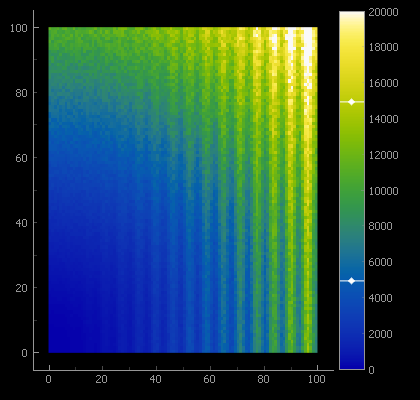
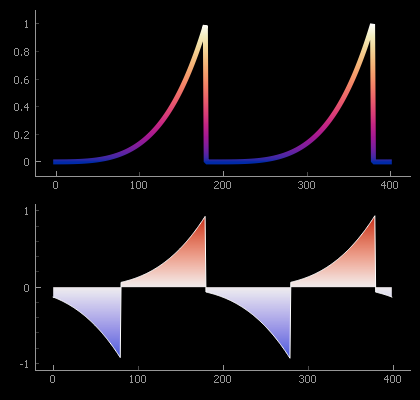

Color Maps#
A color map defines a relationship between scalar data values and a range of colors. Color maps are commonly used to generate false color images, color scatter-plot points, and illustrate the height of surface plots.
PyQtGraph’s ColorMap can conveniently be applied to images and interactively
adjusted by using ColorBarItem.
To provide interactively user-defined color mappings, see
GradientEditorItem and GradientWidget, which wraps it.
GradientEditorItem combines the editing with a histogram and controls for
interactively adjusting image levels.
Setting a color map and adding a color bar can be as simple as:
plot.addItem( img_item := pg.ImageItem(img_data) )
plot.addColorBar( img_item, colorMap='viridis', values=(0, 1) ) ```
ColorMap can also be used a convenient source of colors from a consistent palette or to generate
QPen and QBrush objects used to draw lines and fills that are colored according to
their values along the horizontal or vertical axis.
Sources for color maps#
Color maps can be user defined by assigning a number of stops over the range of 0 to 1. A color is given for each stop, and the in-between values are generated by interpolation.
When map colors directly represent values, an improperly designed map can obscure detail over
certain ranges of values, while creating false detail in others. PyQtGraph includes the
perceptually uniform color maps provided by the
Colorcet project. Color maps can also be imported from the
colorcet library or from matplotlib, if either of these is installed.
To see all available color maps, please run the ColorMap demonstration available in the suite of Examples.
Examples#
False color display of a 2D data set. Display levels are controlled by
a ColorBarItem:
# prepare demonstration data:
data = np.fromfunction(lambda i, j: (1+0.3*np.sin(i)) * (i)**2 + (j)**2, (100, 100))
noisy_data = data * (1 + 0.2 * np.random.random(data.shape) )
# Example: False color image with interactive level adjustment
img = pg.ImageItem(image=noisy_data) # create monochrome image from demonstration data
plot.addItem( img ) # add to PlotItem 'plot'
cm = pg.colormap.get('CET-L9') # prepare a linear color map
bar = pg.ColorBarItem( values= (0, 20_000), cmap=cm ) # prepare interactive color bar
# Have ColorBarItem control colors of img and appear in 'plot':
bar.setImageItem( img, insert_in=plot )
Using QtGui.QPen and QtGui.QBrush to color plots according to the plotted value:
# Prepare demonstration data
raw = np.linspace(0.0, 2.0, 400)
y_data1 = ( (raw+0.1)%1 ) ** 4
y_data2 = ( (raw+0.1)%1 ) ** 4 - ( (raw+0.6)%1 ) ** 4
# Example 1: Gradient pen
cm = pg.colormap.get('CET-L17') # prepare a linear color map
cm.reverse() # reverse it to put light colors at the top
pen = cm.getPen( span=(0.0,1.0), width=5 ) # gradient from blue (y=0) to white (y=1)
# plot a curve drawn with a pen colored according to y value:
curve1 = pg.PlotDataItem( y=y_data1, pen=pen )
# Example 2: Gradient brush
cm = pg.colormap.get('CET-D1') # prepare a diverging color map
cm.setMappingMode('diverging') # set mapping mode
brush = cm.getBrush( span=(-1., 1.) ) # gradient from blue at -1 to red at +1
# plot a curve that is filled to zero with the gradient brush:
curve2 = pg.PlotDataItem( y=y_data2, pen='w', brush=brush, fillLevel=0.0 )
{kind=link}

{kind=link}

The use of color maps is also demonstrated in the ImageView, Color Gradient Plots and ColorBarItem Examples.
API Reference#
- pyqtgraph.colormap.listMaps(
- source=None,
Warning
Experimental, subject to change.
List available color maps.
- pyqtgraph.colormap.get(
- name,
- source=None,
- skipCache=False,
Warning
Experimental, subject to change.
Returns a ColorMap object from a local definition or imported from another library. The generated ColorMap objects are cached for fast repeated access.
- Parameters:
name (
str) – Name of color map. In addition to the included maps, this can also be a path to a file in the local folder. See the files in thepyqtgraph/colors/maps/folder for examples of the format.source (
str, optional) –If omitted, a locally stored map is returned. Otherwise:
‘matplotlib’ imports a map defined by Matplotlib.
‘colorcet’ imports a map defined by ColorCET.
skipCache (
bool, optional) – If skipCache=True, the internal cache is skipped and a new ColorMap object is generated. This can load an unaltered copy when the previous ColorMap object has been modified.
- pyqtgraph.colormap.getFromMatplotlib(
- name,
Generates a ColorMap object from a Matplotlib definition. Same as
colormap.get(name, source='matplotlib').
- pyqtgraph.colormap.getFromColorcet(
- name,
Generates a ColorMap object from a colorcet definition. Same as
colormap.get(name, source='colorcet').
- pyqtgraph.colormap.modulatedBarData(
- length=768,
- width=32,
Returns an NumPy array that represents a modulated color bar ranging from 0 to 1. This is used to judge the perceived variation of the color gradient.
- class pyqtgraph.ColorMap(
- pos,
- color,
- mapping=ColorMap.CLIP,
ColorMap stores a mapping of specific data values to colors, for example:
0.0 → black0.2 → red0.6 → yellow1.0 → whiteThe colors for intermediate values are determined by interpolating between the two nearest colors in RGB color space.
A ColorMap object provides access to the interpolated colors by indexing with a float value:
cm[0.5]returns a QColor corresponding to the center of ColorMap cm.- __init__(
- pos,
- color,
- mapping=ColorMap.CLIP,
- Parameters:
pos (array_like of
float, optional) – Assigned positions of specified colors. None sets equal spacing. Values need to be in range 0.0-1.0.color (array_like of
color_like) – List of colors, interpreted viamkColor().mapping (
strorint, optional) – Controls how values outside the 0 to 1 range are mapped to colors. SeesetMappingMode()for details.The default of ColorMap.CLIP continues to show the colors assigned to 0 and 1 for all values below or above this range, respectively.
- getBrush(
- span=(0.0, 1.0),
- orientation='vertical',
Returns a QBrush painting with the color map applied over the selected span of plot values. When the mapping mode is set to ColorMap.MIRROR, the selected span includes the color map twice, first in reversed order and then normal.
It is recommended to store and reuse this gradient brush instead of regenerating it repeatedly.
- Parameters:
span (
tupleoffloat, optional) –Span of data values covered by the gradient:
Color map value 0.0 will appear at min,
Color map value 1.0 will appear at max.
Default value is (0., 1.)
orientation (
str, default'vertical') –Orientation of the gradient:
‘vertical’: span corresponds to the y coordinate.
‘horizontal’: span corresponds to the x coordinate.
- getColors(
- mode=1,
Returns a list of the colors associated with the stops of the color map.
- The parameter mode can be one of
ColorMap.BYTE or ‘byte’ to return colors as RGBA tuples in byte format (0 to 255)
ColorMap.FLOAT or ‘float’ to return colors as RGBA tuples in float format (0.0 to 1.0)
ColorMap.QCOLOR or ‘qcolor’ to return a list of QColors
The default is byte format.
- getGradient(
- p1=None,
- p2=None,
Returns a QtGui.QLinearGradient corresponding to this ColorMap. The span and orientation is given by two points in plot coordinates.
When no parameters are given for p1 and p2, the gradient is mapped to the y coordinates 0 to 1, unless the color map is defined for a more limited range.
This is a somewhat expensive operation, and it is recommended to store and reuse the returned gradient instead of repeatedly regenerating it.
- Parameters:
- getLookupTable(
- start=0.0,
- stop=1.0,
- nPts=512,
- alpha=None,
- mode=ColorMap.BYTE,
Returns an equally-spaced lookup table of RGB(A) values created by interpolating the specified color stops.
- Parameters:
start (
float, default0.0) – The starting value in the lookup tablestop (
float, default1.0) – The final value in the lookup tablenPts (
int, default512) – The number of points in the returned lookup table.alpha (
bool, optional) – Specifies whether or not alpha values are included in the table. If alpha is None, it will be automatically determined.mode (
intorstr, default'byte') – Determines return type as described inmap(), can be either ColorMap.BYTE (0 to 255), ColorMap.FLOAT (0.0 to 1.0) or ColorMap.QColor.
- Returns:
numpy.ndarrayof{``ColorMap.BYTE,ColorMap.FLOAT}`` – for ColorMap.BYTE or ColorMap.FLOAT:RGB values for each data value, arranged in the same shape as data. If alpha values are included the array has shape (nPts, 4), otherwise (nPts, 3).
listofQColor– for ColorMap.QCOLOR:Colors for each data value as QColor objects.
- getPen(
- span=(0.0, 1.0),
- orientation='vertical',
- width=1.0,
Returns a QPen that draws according to the color map based on vertical or horizontal position.
It is recommended to store and reuse this gradient pen instead of regenerating it repeatedly.
- Parameters:
-
Span of the data values covered by the gradient:
Color map value 0.0 will appear at min.
Color map value 1.0 will appear at max.
Default is (0., 1.)
orientation (
str, default'vertical') –Orientation of the gradient:
‘vertical’ creates a vertical gradient, where span corresponds to the y coordinate.
‘horizontal’ creates a horizontal gradient, where span corresponds to the x coordinate.
width (
intorfloat) – Width of the pen in pixels on screen.
-
- getStops(
- mode=1,
Returns a tuple (stops, colors) containing a list of all stops (ranging 0.0 to 1.0) and a list of the associated colors.
- The parameter mode can be one of
ColorMap.BYTE or ‘byte’ to return colors as RGBA tuples in byte format (0 to 255)
ColorMap.FLOAT or ‘float’ to return colors as RGBA tuples in float format (0.0 to 1.0)
ColorMap.QCOLOR or ‘qcolor’ to return a list of QColors
The default is byte format.
- getSubset(
- start,
- span,
Returns a new ColorMap object that extracts the subset specified by ‘start’ and ‘length’ to the full 0.0 to 1.0 range. A negative length results in a color map that is reversed relative to the original.
- Parameters:
start (
float) – Starting value that defines the 0.0 value of the new color map. Possible value between 0.0 to 1.0span (
float) – Span of the extracted region. The original color map will be treated as cyclical if the extracted interval exceeds the 0.0 to 1.0 range. Possible values between -1.0 to 1.0.
- isMapTrivial()[source]#
Returns True if the gradient has exactly two stops in it: Black at 0.0 and white at 1.0.
- linearize()[source]#
Adjusts the positions assigned to color stops to approximately equalize the perceived color difference for a fixed step.
- map(
- data,
- mode=ColorMap.BYTE,
Returns an array of colors corresponding to a single value or an array of values. Data must be either a scalar position or an array (any shape) of positions.
- Parameters:
data (
floator array_like offloat) – Scalar value(s) to be mapped to colors-
Determines return format:
ColorMap.BYTE or ‘byte’: Colors are returned as 0-255 unsigned bytes. (default)
ColorMap.FLOAT or ‘float’: Colors are returned as 0.0-1.0 floats.
ColorMap.QCOLOR or ‘qcolor’: Colors are returned as QColor objects.
- Returns:
numpy.ndarrayof{``ColorMap.BYTE,ColorMap.FLOAT, QColor}`` – for ColorMap.BYTE or ColorMap.FLOAT:RGB values for each data value, arranged in the same shape as data.
listofQColor– for ColorMap.QCOLOR:Colors for each data value as QColor objects.
- reverse()[source]#
Reverses the color map, so that the color assigned to a value of 1 now appears at 0 and vice versa. This is convenient to adjust imported color maps.
- setMappingMode(
- mapping,
Sets the way that values outside of the range 0 to 1 are mapped to colors.
- Parameters:
mapping (
intorstr) – Sets mapping mode toColorMap.CLIP or ‘clip’: Values are clipped to the range 0 to 1. ColorMap defaults to this.
ColorMap.REPEAT or ‘repeat’: Colors repeat cyclically, i.e. range 1 to 2 repeats the colors for 0 to 1.
ColorMap.MIRROR or ‘mirror’: The range 0 to -1 uses same colors (in reverse order) as 0 to 1.
ColorMap.DIVERGING or ‘diverging’: Colors are mapped to -1 to 1 such that the central value appears at 0.